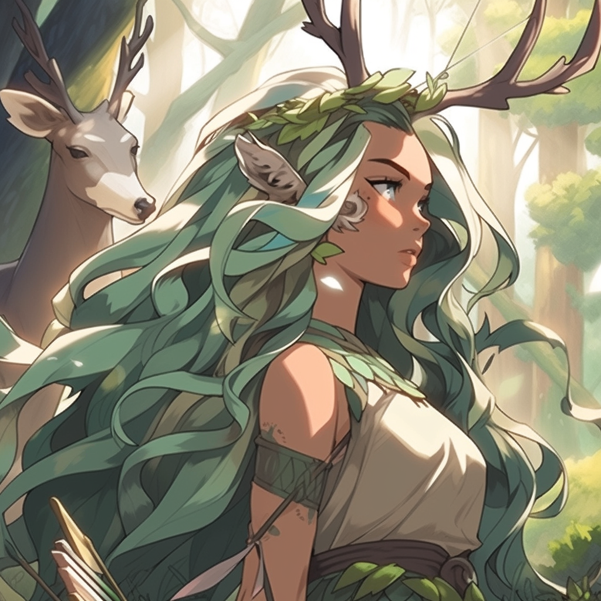

Origin
The ancient Greeks worshiped the Olympians, the twelve major deities of their pantheon. They built temples and shrines in their honor, and their stories and adventures have been told and retold for centuries. These stories continue to fascinate people today, thanks to their complex characters, their relatable human emotions, and their larger-than-life adventures.
Mount Olympus

Zeus King of gods
Zeus' depiction
- He is the god of the sky
- He is the god of thunder
- He is often depicted as a powerful and virile man
- Zeus is also known for his many affairs with mortals and goddesses, and he is the father of many famous Greek heroes.
The 12 Olympians
The 12 Olympians were the principal gods of the Greek pantheon, residing atop Mount Olympus. They were believed to be responsible for all aspects of life, from the weather to the harvest to human affairs.
- Zeus : The king of the gods, god of the sky and thunder.
- Hera: The queen of the gods, goddess of marriage and women.
- Poseidon: The god of the sea, earthquakes, and horses.
- Demeter: The goddess of agriculture, grain, and fertility.
- Aphrodite: The goddess of love, beauty, pleasure, and procreation.
- Ares: The god of war, violence, and bloodshed.
- Athena: The goddess of wisdom, handicraft, and warfare.
- Apollo: The god of music, truth, knowledge, light, healing, and archery.
- Artemis: The goddess of the hunt, wilderness, wild animals, childbirth, and protectress of girls. 
- Hephaestus: The god of fire, metalworking, and craftsmanship.
- Hestia: The goddess of the hearth, home, and family.